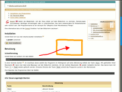

Gromit
Dieser Artikel wurde für die folgenden Ubuntu-Versionen getestet:
Ubuntu 16.04 Xenial Xerus
Ubuntu 14.04 Trusty Tahr
Zum Verständnis dieses Artikels sind folgende Seiten hilfreich:
Gromit  bietet die Möglichkeit, mit der Maus direkt auf dem Bildschirm zu zeichnen, um Markierungen vorzunehmen, Wichtiges zu umranden bzw. zu unterstreichen. Das kann insbesondere für Präsentationen sehr nützlich sein. Der Programmname ist ein Akronym für "GRaphics Over MIscellaneous Things".
bietet die Möglichkeit, mit der Maus direkt auf dem Bildschirm zu zeichnen, um Markierungen vorzunehmen, Wichtiges zu umranden bzw. zu unterstreichen. Das kann insbesondere für Präsentationen sehr nützlich sein. Der Programmname ist ein Akronym für "GRaphics Over MIscellaneous Things".
Es gibt mehrere Alternativen zu Gromit. Eine ist z.B. die Compiz-Funktion "Auf den Bildschirm zeichnen", die über CompizConfig (CCSM) aktiviert werden kann. Externe Programme sind dagegen Ardesia und Pylote  . Der Hauptunterschied zwischen den beiden Programmen ist, dass Pylote keinen Composite-Manager benötigt.
. Der Hauptunterschied zwischen den beiden Programmen ist, dass Pylote keinen Composite-Manager benötigt.
Mit Gromit-MPX steht eine Weiterentwicklung zur Verfügung, die ab Ubuntu 14.04 ebenfalls über die offiziellen Paketquellen installiert werden kann.
Installation¶
Gromit lässt sich aus den offiziellen Paketquellen installieren [1]:
gromit (universe)
 mit apturl
mit apturl
Paketliste zum Kopieren:
sudo apt-get install gromit
sudo aptitude install gromit
Verwendung¶
 Gromit lässt sich einfach mit dem Befehl
gromit &
in einem Terminalfenster oder via
Alt +
F2 starten [2]. Im Anschluss daran wartet das Programm im Hintergrund auf seine Aktivierung mittels der Taste
Pause . Mit gedrückter linker Maustaste  kann man dann eine rote Mausspur auf den Bildschirm zeichnen und mit gedrückter rechter Maustaste
kann man dann eine rote Mausspur auf den Bildschirm zeichnen und mit gedrückter rechter Maustaste  wieder löschen. Das Ganze kann mit Taste
⇧ +
Pause wieder gelöscht werden. Erneutes Drücken der Taste
Pause schickt das Programm zurück in den Wartemodus.
wieder löschen. Das Ganze kann mit Taste
⇧ +
Pause wieder gelöscht werden. Erneutes Drücken der Taste
Pause schickt das Programm zurück in den Wartemodus.
Zum Beenden des Programms dient der Befehl:
gromit -q
Alle Steuerungsmöglichkeiten¶
| Steuerung | |
| Taste | Beschreibung |
| Pause | aktiviert und deaktiviert Gromit |
| ⇧ + Pause | alle Anmerkungen werden gelöscht |
| Strg + Pause | alle Anmerkungen werden ausgeblendet, gleichzeitig wird Gromit deaktiviert. Die erneute Betätigung der Tastenkombination aktiviert das Programm und blendet gleichzeitig alle Anmerkungen wieder ein. |
| | Roter Stift |
|
Strg + | Gelber Stift |
|
⇧ + | Blauer Stift |
|
Alt + | Rosa Stift |
| Grüner Marker (auf vorhandenen Anmerkungen) | |
| | Radierer, 75 Pixel |
|
⇧ + | Radierer, 150 Pixel |
Kommandozeilen-Optionen¶
Gromit kann mit Optionen aufgerufen werden. Dabei gibt es Optionen, die dem Programm beim Start mitgegeben werden, und solche, mit denen ein laufendes Gromit gesteuert werden kann. Diese Optionen sind insbesondere sinnvoll für den Aufruf aus anderen Programmen oder Skripten heraus. Ein denkbares einfaches Beispiel ist ein Programmumschalter mit Zenity.
| Start-Optionen | ||
| Kurzform | Langform | Beschreibung |
-a | --active | startet Gromit aktiviert |
-k TASTE | --key TASTE | Legt eine andere Taste zum Einfangen der Maus fest. TASTE ist eine Bezeichnung wie "Pause", "F12", "Control_R" oder "Print". Diese Namen können mit dem xev-Befehl ermittelt werden. |
-K CODE | --keycode CODE | In seltenen Fällen funktioniert das Festlegen der Taste mit dem Namen nicht, hier kann der Tasten-Code verwendet werden. Auch dieser kann mit xev ermittelt werden. |
-d | --debug | Liefert Debug-Informationen |
| Steuerungs-Optionen | ||
| Kurzform | Langform | Beschreibung |
-q | --quit | Gromit beenden |
-t | --toggle | Umschalten zwischen gefangener Maus (Gromit aktiv) und freier Maus |
-v | --visibility | Umschalten der Sichtbarkeit des Fensters |
-c | --clear | Bildschirm leeren |
Konfiguration¶
Die Einstellungen sind global in der Datei /etc/gromit/gromitrc festgelegt. Diese Datei kann als Ausgangspunkt kopiert werden, um eine eigene Konfiguration unter ~/gromitrc anzulegen [3].
Im Abschnitt Tools können Strichstärken und Schriftfarben sowie die Größe des Radierers festgelegt werden. Dabei können auch neue Stifte angelegt werden, denen im Abschnitt Mapping to Pointing devices Tastenkombinationen zugewiesen werden.
Zusätzliche Einträge¶
Ein Stift¶
Um einen etwas dickeren, orangefarbenen Stift zu definieren, den man mit
Strg +
Alt + nutzen kann, dienen die folgenden zusätzlichen Einträge in den jeweiligen Abschnitten:
# Tools "oranger Stift" = PEN (size=12 color="orange"); # Mapping to Pointing devices "Core Pointer"[CONTROL META] = "oranger Stift";
Vollständige Konfigurationen¶
Vier Farben, zwei Strichstärken¶
Dieses Beispiel ergibt eine vollständige, vereinfachte Konfiguration mit Stiften in vier Farben und in zwei Strichstärken. Dünne Linien werden mit der linken Maustaste gezeichnet, dicke Linien mit der rechten Maustaste. Marker werden nicht benutzt.
| Farbe | Dünne Linie | Dicke Linie |
| Rot | | |
| Orange |
⇧ + |
⇧ + |
| Gelb |
Strg + |
Strg + |
| Grün |
Alt + |
Alt + |
Der Radierer lässt sich über die mittlere Maustaste bedienen, wobei die Tasten für die Farben von Rot bis Grün die Größe beeinflussen.
| Größe | Tasten |
| 7 Pixel | |
| 14 Pixel | ⇧ + |
| 56 Pixel | Strg + |
| 168 Pixel | Alt + |
Die Konfigurationsdatei ~/gromitrc für dieses Beispiel sieht wie folgt aus:
# Configuration file for gromit # Tools "roter Stift" = PEN (size=7 color="red"); "gelber Stift" = PEN (size=7 color="yellow"); "oranger Stift" = PEN (size=7 color="orange"); "grüner Stift" = PEN (size=7 color="Limegreen"); "Radierer" = ERASER (size = 18); # Mapping to Pointing devices "Core Pointer" = "roter Stift"; "Core Pointer"[SHIFT] = "oranger Stift"; "Core Pointer"[CONTROL] = "gelber Stift"; "Core Pointer"[META] = "grüner Stift"; "Core Pointer"[3] = "roter Stift" (size = 15); "Core Pointer"[3 SHIFT] = "oranger Stift" (size = 15); "Core Pointer"[3 CONTROL] = "gelber Stift" (size = 15); "Core Pointer"[3 META] = "grüner Stift" (size = 15); "Core Pointer"[2] = "Radierer"; "Core Pointer"[2 SHIFT] = "Radierer" (size = 35); "Core Pointer"[2 CONTROL] = "Radierer" (size = 70); "Core Pointer"[2 META] = "Radierer" (size = 140);
 Übersichtsartikel
Übersichtsartikel- Erstellt mit Inyoka
-
 2004 – 2017 ubuntuusers.de • Einige Rechte vorbehalten
2004 – 2017 ubuntuusers.de • Einige Rechte vorbehalten
Lizenz • Kontakt • Datenschutz • Impressum • Serverstatus -
Serverhousing gespendet von